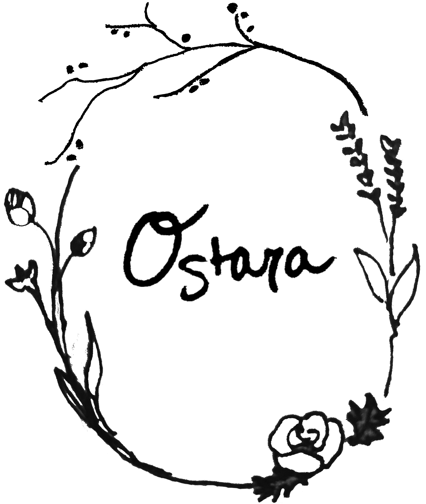

<div>
  <div *ngIf="underConstruction; else elseBlock">
    <app-construction></app-construction>
  </div>
  <ng-template #elseBlock>
    <mat-sidenav-container class="sidebar">
      <mat-sidenav opened="true"
                   mode="side"
                   [fixedInViewport]="true"
      >
        <mat-nav-list>
          <div class="wrap-branding">
            <a [routerLink]="'/main'">
              
            </a>
          </div>
          <div class="nav">
            <a mat-list-item *ngFor="let link of navLinks"
               [routerLink]="link.path"
               routerLinkActive #rla="routerLinkActive"
               [routerLinkActiveOptions]="{exact:false}"
            >
              <h3 matLine [class.list-item-active]="rla.isActive">{{link.label}}</h3>
            </a>
            <a mat-icon-button><mat-icon color="primary">person</mat-icon></a>
            <a mat-icon-button
               [routerLink]="this.cartPath.path"
            >
              <mat-icon
                color="primary"
                matBadge="{{count}}"
                [matBadgeHidden]="count == 0"
                matBadgeColor="accent">shopping_cart</mat-icon>
            </a>
            <p style="color: red">
              Site under construction. Not all functionality active.
            </p>
          </div>
        </mat-nav-list>
      </mat-sidenav>
    </mat-sidenav-container>
    <div class="main-content">
      <router-outlet></router-outlet>
    </div>
  </ng-template>
</div>

